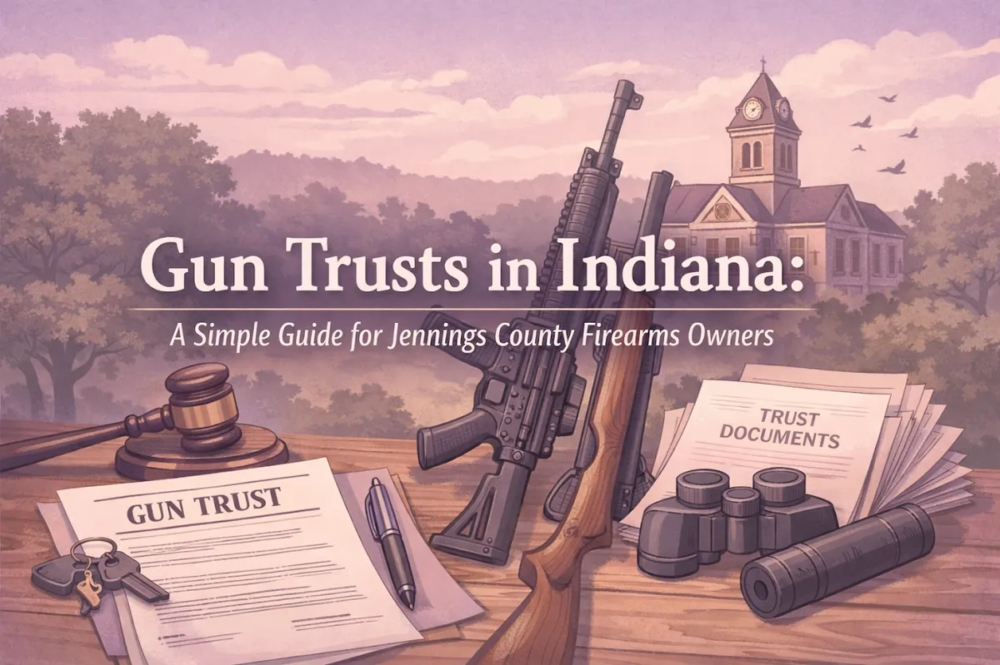
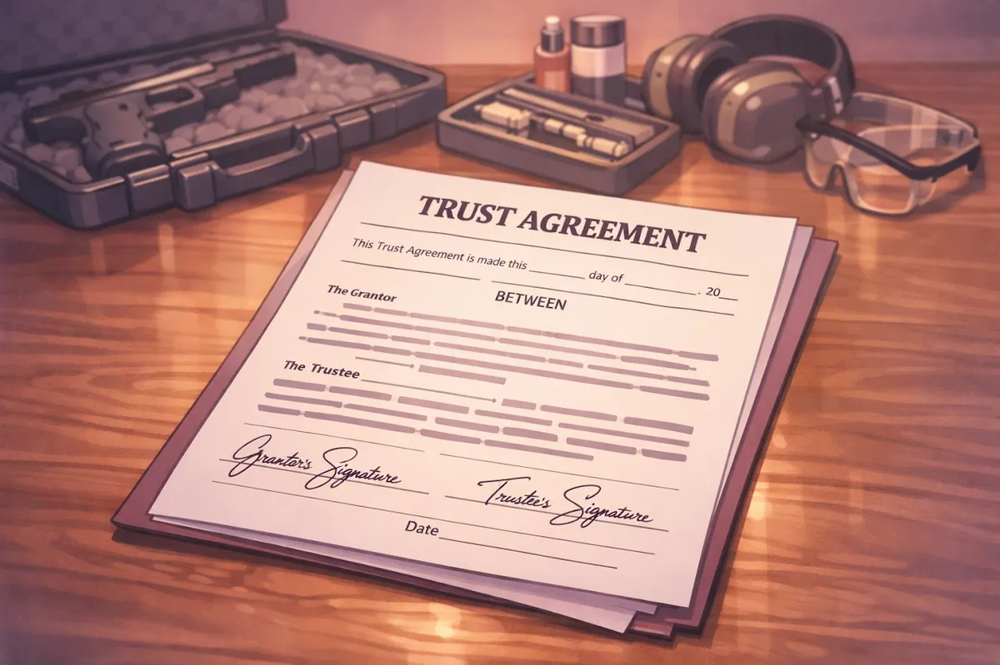
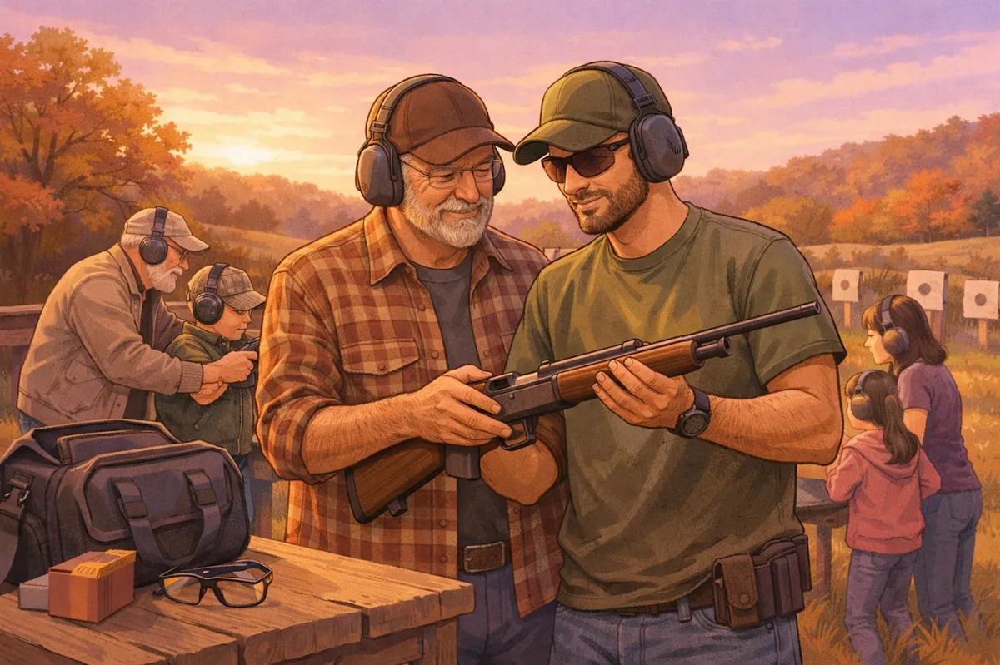
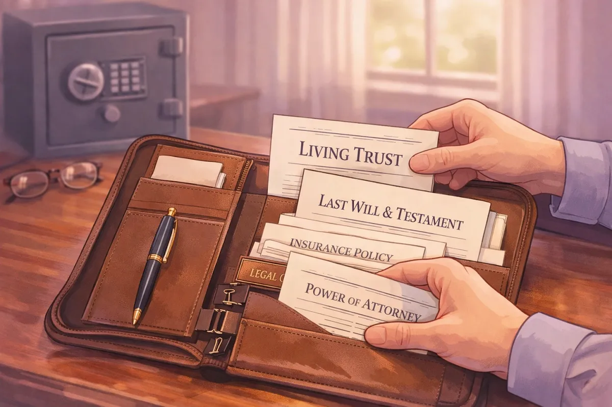

Gun Trusts in Indiana: A Simple Guide for Jennings County Firearms Owners

If you're a firearms owner in North Vernon, Commiskey, Hayden, or anywhere else in Jennings County, you've probably heard someone mention a "gun trust" at the range, on Facebook, or a local gun shop. Maybe you've wondered if you need one, or what exactly it does.
The short answer: If you own, or are thinking about buying, items like suppressors, short-barreled rifles, or other firearms regulated under the National Firearms Act (NFA), a gun trust can make your life a lot easier. Even if you don't own NFA items yet, a gun trust can help protect your firearms collection and make sure it passes to your family without unnecessary headaches.
Here's what you need to know.
What Exactly Is a Gun Trust?
A gun trust is a legal document, similar to the trusts people use for estate planning, that's designed specifically to hold ownership of firearms. Think of it like creating a small legal "container" that owns your guns instead of you owning them personally.
But don't worry, you're still in control. As the person who creates the trust (called the "grantor" or "settlor"), you decide who can use the firearms, who gets them when you pass away, and how everything works. You can even change or cancel the trust if your circumstances change.
The trust names "trustees", people you authorize to legally possess and use the firearms in the trust. This could be your spouse, your adult children, or a trusted friend who helps you at the range. The key benefit is that all of these people can legally access and use the firearms without going through additional paperwork or paying extra fees for each person.
Why Gun Trusts Matter for NFA Items
If you own suppressors (also called silencers), short-barreled rifles, short-barreled shotguns, or certain other firearms, you're dealing with the National Firearms Act. The Bureau of Alcohol, Tobacco, Firearms and Explosives (ATF) regulates these items heavily, and there's a lot of paperwork involved.
Here's the problem if you don't have a trust: Only the registered owner can legally possess the NFA item. That means if you let your spouse shoot your suppressor at the range while you step away to grab more ammo, technically you've committed a federal crime. The same goes if you store it at home and your spouse has access to the safe combination.
With a gun trust, everyone you name as a trustee can legally possess and use those items. You file the paperwork once when you buy the item, and everyone listed on the trust is covered.

The $200 Tax Stamp
When you buy an NFA item, whether it's through a trust or as an individual, you pay a $200 tax to the ATF and wait for approval. This process can take months. The ATF runs background checks on everyone involved.
Here's where the trust really shines: If you pass away and your family inherits your NFA items, they don't have to pay that $200 tax stamp again if the firearms are in a trust. Without a trust, your heirs would need to go through the entire registration process and pay the tax for each item they inherit.
Benefits Beyond NFA Compliance
Even if you only own standard firearms right now, a gun trust offers real advantages:
Avoiding Probate. When someone passes away in Indiana, their estate usually goes through probate court. This process is public, slow, and can be expensive. Firearms in a gun trust pass directly to your named beneficiaries without going through probate. Your family gets access to the firearms faster, and there's no public record of what you owned.
Planning for the Future. If you become incapacitated or unable to manage your affairs, the successor trustee you named in the trust can step in and handle your firearms legally. Without a trust, your family might face complicated legal hurdles trying to access or sell your collection during a difficult time.
Privacy. Gun trusts keep your firearms ownership private. Some gun owners in Jennings County value that privacy, especially in our small community where everyone knows everyone.

Sharing Responsibly. If you have adult children who enjoy shooting or hunting, a gun trust lets them legally use your firearms while you're still alive. This is especially helpful for families who share firearms for deer season or target shooting.
What's Changed in Indiana and Why You Still Need a Trust
A few years back, the law required a Chief Law Enforcement Officer (CLEO), like the Jennings County Sheriff, to sign off on your NFA application. Many gun owners created trusts specifically to avoid this requirement because some sheriffs were reluctant to sign.
The law changed in 2016. Now, you don't need the sheriff's signature anymore, you just need to notify the sheriff's office that you're applying. This applies whether you're buying as an individual or through a trust.
But here's the thing: The trust is still the smarter option for most people. The benefits I mentioned above, multiple authorized users, avoiding probate, planning for incapacity, and transferring items without extra tax stamps, those advantages didn't go away when the law changed. If anything, a gun trust is more about protecting your family and your investment than about avoiding a signature.
DIY Gun Trusts vs. Working with a Local Attorney
You can find gun trust templates online for $50 or $100. I understand the appeal, it's cheaper and faster. But here's what those templates don't tell you:
Indiana Trust Law Matters. A gun trust is still a trust, and it needs to comply with Indiana trust law. If the document isn't properly drafted or doesn't meet Indiana's requirements, it might not be valid. That means your family could face serious problems down the road when they need to rely on it.
One Size Doesn't Fit All. Your situation is unique. Maybe you have firearms you want to pass to your kids but not to your spouse. Maybe you want specific instructions about selling certain items. Maybe you have concerns about a family member's legal eligibility to own firearms. A template can't address these details.
ATF Scrutiny. The ATF reviews your trust document when you apply for an NFA item. If there are problems with the document, your application gets delayed or denied. There have been many cases where people used online forms and ended up starting over from scratch.
When you work with an attorney in Jennings County who understands Indiana law and gun trusts, you get a document tailored to your needs. You can ask questions, adjust the terms, and make sure everything is done right the first time.

What to Bring When Setting Up a Gun Trust
If you decide to set up a gun trust, here's what makes the process smoother:
A list of your firearms (especially any NFA items you currently own or plan to purchase)
Names and information for trustees (the people you want to authorize)
Beneficiary information (who should inherit your firearms)
Questions about your specific situation (storage, use, future plans)
The process doesn't take long, and once the trust is set up, you can use it for any future firearms purchases. If you buy a new suppressor or short-barreled rifle five years from now, the trust is already in place and ready to go.
Common Questions from Jennings County Gun Owners
Can I add firearms to the trust later? Yes. You can transfer firearms into the trust anytime. For NFA items, you'll still need ATF approval, but the trust is already established.
What if I move out of Indiana? Most gun trusts are portable, but you should review the trust with an attorney in your new state to make sure it still complies with local laws.
Can I remove someone as a trustee? Yes, as long as the trust is revocable (which most are). You keep control and can change trustees whenever needed.
Do I need a trust if I only own shotguns and rifles? You don't need one, but it's still helpful for estate planning purposes. If you have a collection worth protecting and you want to make sure it goes to the right people without probate, a gun trust makes sense.
Why Local Matters
Gun laws vary by state, and trust law is complicated. Working with an attorney who practices in Jennings County means you're getting someone who understands Indiana law and how it applies right here in North Vernon, Vernon, and the surrounding areas.
Whether you're a hunter with a modest collection or a serious collector with multiple NFA items, I can walk you through the process and answer your questions in plain English.
If you're thinking about buying a suppressor, planning your estate, or just want to make sure your firearms are handled properly when the time comes, let's talk. I'm happy to explain how a gun trust works and whether it makes sense for your situation.
Your firearms are an investment and part of your legacy. A gun trust helps protect both.